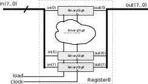

D - Lógica Sequencial
| Entrega |
|---|
| 27/9 - Terça |

Neste projeto você terá que desenvolver os componentes síncronos que serão utilizados na construção do nosso computador Z01.
Instruções
Warning
O grupo deve eleger um novo scrum master para essa entrega (diferente do projeto B, C).
Antes de começar 1
Siga os passos em:
Vixi Sou scrum master 2
Você é o scrum do projeto? Leia:
Vixi! Sou desenvolvedor 3
Seu papel é o de desenvolvedor? Leia:
Instruções
Os arquivos referentes ao projeto são:
hw/seq.py: Script python com os módulos a serem implementadoshw/test_seq.py: Script de teste
Executando o Script de Teste
Abra o terminal na pasta hw execute o pytest
$pytest test_seq.py
Tip 4
Você pode usar o -k MODULO para executar apenas o teste o do módulo que deseja, exemplo (para testar o PC):
pytest test_seq.py -k pc
Projeto
O projeto consistem em:
- Implementar os módulos descritos a seguir.
- Para cada módulo vocês devem gerar uma forma de onda
gtkviewe salvar na pastahw/waveform
Módulos
Os modulos a serem desenvolvidos na entrega estão detalhados no livro base do curso: Capítulo 3 - The Elements of Computing Systems
dff(q, d, clear, presset, clk, rst)binaryDigit(i, load, output, clk, rst)register8(i, load, output, clk, rst)registerN(i, load, output, width, clk, rst)pc(increment, load, i, output, width, clk, rst)ram(dout, din, addr, we, clk, rst, width, depth)
- Flip-flop
- Módulo:
dff(q, d, clear, presset, clk, rst) - Dependência:
- Test:
pytest test_seq.py -k dff - Módulo já implementado.
- Binary Digit
- Módulo:
binaryDigit(i, load, output, clk, rst) - Dependência:
dff - Descrição : É um registrador feito para armazenar um único bit de informação (0 ou 1). A interface do módulo consiste em uma entrada (d) para o bit a ser armazenado, um sinal de load para indicar quando o bit de entrada deve ser armazenado um sinal de clock e a saída output* que é o bit armazenado:
- Módulo:

- Register 8
- Módulo :
register8(i, load, output, clk, rst) - Dependência :
binaryDigit - Descrição : É um registrador de 8 bits criado a partir do
binaryDigitporém agora para armazenar um vetor de entrada de 8 bits de tamanho.
- Módulo :

- Register N
- Módulo :
registerN(i, load, output, width, clk, rst) - Dependência :
binaryDigit(ou register8) - Descrição : É um registrador de N bits criado a partir do
binaryDigitporém agora para armazenar um vetor de entrada de N bits de tamanho.
- Módulo :
- Program Counter
- Módulo :
pc(increment, load, i, output, width, clk, rst) - Dependência :
registerN(pode usarinc16,mux) - Descrição : O program counter será o nosso endereçador de memória da CPU, ele será responsável por apontar para a próxima instrução a ser executada. Como normalmente um código segue um fluxo sequencial (uma linha na sequência da outra) o PC possui a habilidade de se auto incrementar a cada clock (apontando assim para a próxima instrução), mas ele tem que suportar condições (if, while, ...) rompendo com esse fluxo contínuo.
- Módulo :
Para maiores detalhes consulte o livro texto do curso.
-
ram
- Módulo :
ram(dout, din, addr, we, clk, rst, width, depth) - Dependência :
RegisterN(pode depender demux,demux8) -
Descrição : É uma memória de 8 endereços com 16 bits de largura. O componente possui como entrada o vetor input de 16 bits, o endereço a ser armazenado (address) o sinal load que indica quando é para ser armazenado e o clock. Como saída temos o valor lido no endereço especificado quando load for igual a 0. Note que sinal LOAD tem como função similar o do READ/WRITE, quando zero, indica que queremos ler o valor armazenado, quando 1 indica que queremos escrever (write) nessa posição.
-
width: É a largura dos dados da memória RAM depth: É a quantidade de endereços que a memória possui
- Módulo :

Tip 5
Todos esses módulos estão bem documentados no livro The Elements of Computer System. Cap 3.
Forma de onda
Para cada teste realizado, deve-se carregar o gtkview e tirar um print da forma de onda do módulo com os testes aplicados a ele. Essa imagem deve ser salva na mesma pasta hw/waveform/ e com o mesmo nome dos módulos.
Warning
Não basta só gerar a imagem, você precisa analisar e entender. Isso será cobrado nas avaliações.
Projeto
| Conceito | |
|---|---|
| A | (a1) Vídeo explicando os módulos |
| B | (b2) Usou sempre que possível outros módulos para criar um novo (hierarquia) |
(b1) Exemplo: usou o inc16, mux e reg para criar PC |
|
| C | (c3) Todos os módulos básicos testados no github actions |
| (c2) Todos os módulos básicos passam nos testes | |
| (c1) Possui a forma de onda (.png) | |
| D | (d1) Ao menos um módulo não foi implementando ou não passa no testes. |
| I | (i1) Menos da metade dos módulos funcionando |
A
Para o conceito A o grupo (todos os integrantes) devem gravar um vídeo que contém (na sequência) e para cada módulo realizado uma explicaćão de:
- O diagrama (
hardware) do módulo - O
MyHDLque descreve o módulo - A forma de onda da simulacão (
gtkwave) explicada